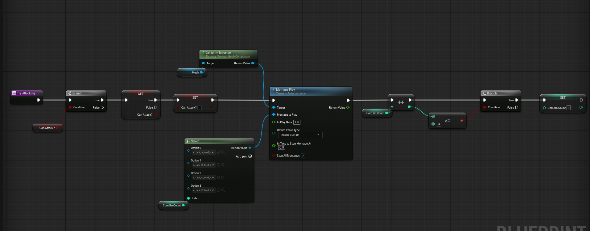
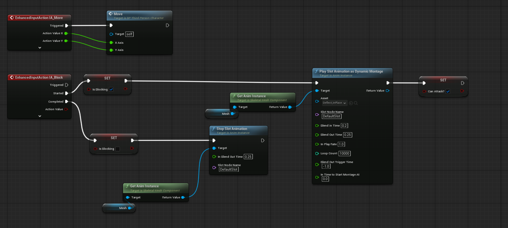

Overview
Melee Combat System เป็นระบบการต่อสู้ระยะประชิดที่พัฒนาขึ้นบน Unreal Engine 5 โดยเน้นความลื่นไหลและจังหวะการตอบสนองที่แม่นยำ (Responsive Combat Flow)
ระบบถูกสร้างขึ้นผ่าน Blueprints ผสานการทำงานร่วมกับ Enhanced Input, Animation Blueprint และ Anim Notifies เพื่อควบคุมจังหวะคอมโบ, การตรวจจับฮิตบ็อกซ์อาวุธแบบ Trace, การตั้งการ์ดป้องกัน (Block/Deflect) ตลอดจนระบบ AI ศัตรูที่มีการสุ่มจังหวะการโจมตีและโต้ตอบดาเมจแบบสมบูรณ์
Core Features
- Combo Attack Chain: ระบบโจมตีต่อเนื่อง 4 สเต็ป ควบคุมด้วยตัวแปรนับคอมโบและป้องกันการกดปุ่มซ้ำซ้อน
- Anim Notify Timing Window: ใช้ Notify เปิด-ปิดช่วงเวลากดต่อคอมโบ (AllowCombo) และรีเซ็ตคอมโบเมื่อหมดจังหวะ (ResetCombo)
- Weapon Trace Collision: ตรวจจับการชนของอาวุธด้วย Multi Sphere Trace จากพิกัด Socket พร้อมระบบคัดกรองฮิตไม่ให้ดาเมจซ้ำในครั้งเดียว
- Block & Deflect System: ระบบยกการ์ดป้องกันผ่าน Enhanced Input และควบคุมผ่าน Dynamic Montage
- Damage, Stun & Death Logic: คำนวณหักลบพลังชีวิต, เล่นท่า Hit Reaction, สถานะสตั๊นหน่วงเวลา 1.5 วินาที และลำดับการตายที่ปิดการเคลื่อนไหวสมบูรณ์
- Enemy AI Combat Behavior: AI ศัตรูที่มีการเช็คสถานะสตั๊น สุ่มรูปแบบท่าโจมตี และส่งดาเมจโต้ตอบผู้เล่น
Gameplay Showcase
Blueprint Architecture & Mechanics
1. Player Combo Attack System
โครงสร้างฟังก์ชัน Try Attacking เพื่อจัดการคำสั่งโจมตีของผู้เล่น โดยตรวจสอบเงื่อนไข Can Attack? ก่อนทำการล็อกสถานะเพื่อไม่ให้อนิเมชันโจมตีถูกสั่งซ้ำขณะกำลังออกท่า จากนั้นส่งค่า Com Bo Count เข้าไปยัง Node Select เพื่อเลือกเล่นท่าโจมตีที่กำหนดไว้ (Attack A - D) ผ่าน Montage Play พร้อมบวกนับสเต็ปคอมโบและวนลูปกลับเมื่อครบ 4 สเต็ป

2. Animation Blueprint & Timing Window
การจัดการภายใน Animation Blueprint โดยแคสต์เก็บ Reference ของตัวละครและ Character Movement ตั้งแต่ช่วง Initialize ส่วนในลูป Update จะคำนวณเวกเตอร์ความเร็วของตัวละครส่งเข้าตัวแปร Speed และมีหัวใจสำคัญคือการผูก Event Anim Notifies:
AnimNotify_AllowCombo:ทำงาน ณ เฟรมที่เปิดโอกาสให้ผู้เล่นกดคลิกเพื่อส่งคำสั่งคอมโบสเต็ปถัดไปล่วงหน้า (ตั้งค่าCan Attack? = true)AnimNotify_ResetCombo:ทำงานเมื่อแอนิเมชันสิ้นสุดโดยไม่มีการกดต่อคอมโบ เพื่อรีเซ็ตCom Bo Count = 0กลับสู่ท่าเตรียมพร้อมเริ่มต้น

3. Weapon Hitbox & Collision Detection
ระบบตรวจจับการฟันของอาวุธโดยใช้ AnimNotifyState (ผ่านฟังก์ชัน Received_NotifyTick) เพื่อทำการ Trace เฉพาะจังหวะที่คมอาวุธเคลื่อนที่ในอากาศ โดยดึงตำแหน่ง Socket หัว-ท้ายของอาวุธมาสร้างเป็นเส้น Multi Sphere Trace For Objects เมื่อตรวจพบการชนจะนำผลลัพธ์จาก Break Hit Result มาตรวจสอบผ่าน Array เพื่อป้องกันไม่ให้เกิดความเสียหายซ้ำหลายฮิตต่อศัตรูตัวเดิมในการฟันครั้งเดียว ก่อนจะส่งคำสั่ง Apply Damage

4. Enhanced Input: Block & Deflect
ระบบการควบคุมผ่าน Enhanced Input System โดยผูกคำสั่ง IA_Block:
- เมื่อกดปุ่มบล็อก (Started): เซ็ตสถานะ
Is Blocking = trueและสั่งเล่นแอนิเมชันตั้งการ์ดปัดป้องDeflect_InPlaceแบบวนลูปผ่าน Slot Animation - เมื่อปล่อยปุ่มบล็อก (Completed): สั่ง
Stop Slot Animationเพื่อยุติแอนิเมชันทันทีและรีเซ็ตสถานะIs Blocking = false

5. Damage, Hit Reaction, Stun & Death Logic
การรับความเสียหายผ่าน Event AnyDamage โดยตรวจสอบสถานะว่าตัวละครยังมีชีวิตอยู่หรือไม่ ก่อนจะคำนวณหักลบพลังชีวิต Health และสั่งเล่น Play Anim Montage (HitReact_Back) เพื่อให้เกิดแรงสะท้อนตามจริง จากนั้นประมวลผลต่อด้วย Sequence:
- Death Check: หาก
Health <= 0จะปรับสถานะIs Dead = true, สั่งStop Movement Immediately, เล่นแอนิเมชันตาย (Death) และสั่งซ่อน Widget หลอดเลือด - Stun Reaction: หากยังไม่ตาย จะสั่งเปิดสถานะ
Is Stunned = trueหน่วงเวลาด้วย Retriggerable Delay 1.5 วินาที ทำให้ศัตรูชะงักเปิดโอกาสให้ผู้เล่นโจมตีซ้ำ


6. Enemy AI Attack Behavior
ระบบพฤติกรรม AI ในการโจมตี โดยตรวจสอบเงื่อนไขไม่ให้โจมตีหากติดสถานะสตั๊น (NOR Is Stunned) จากนั้นสุ่มท่าโจมตีผ่าน Random Integer in Range (0-3) เข้า Node Select เพื่อเลือกแอนิเมชันโจมตีที่แตกต่างกันออกไป เมื่อออกท่าจะสั่ง Apply Damage (Base Damage 10.0) ส่งไปยังตัวละครผู้เล่น (Get Player Character) และมี Delay ควบคุมจังหวะคูลดาวน์ก่อนจะพร้อมโจมตีในรอบถัดไป